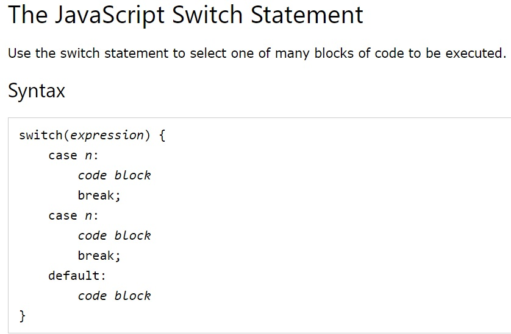
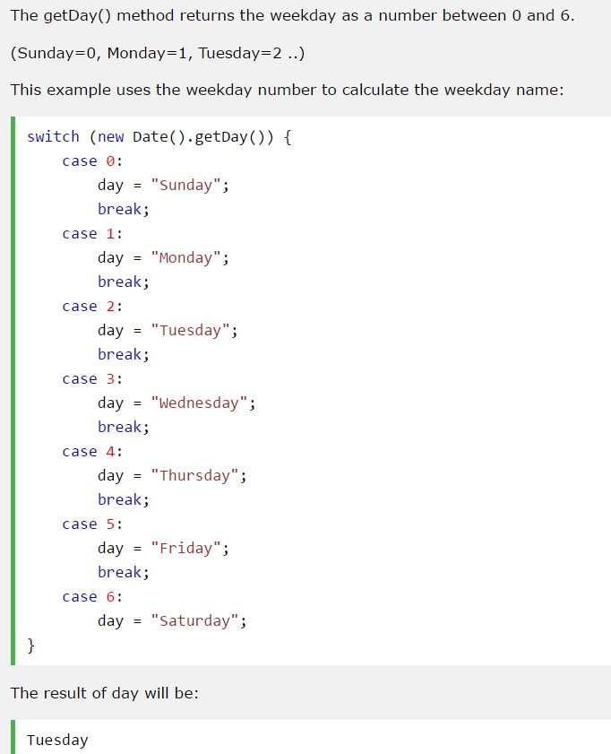
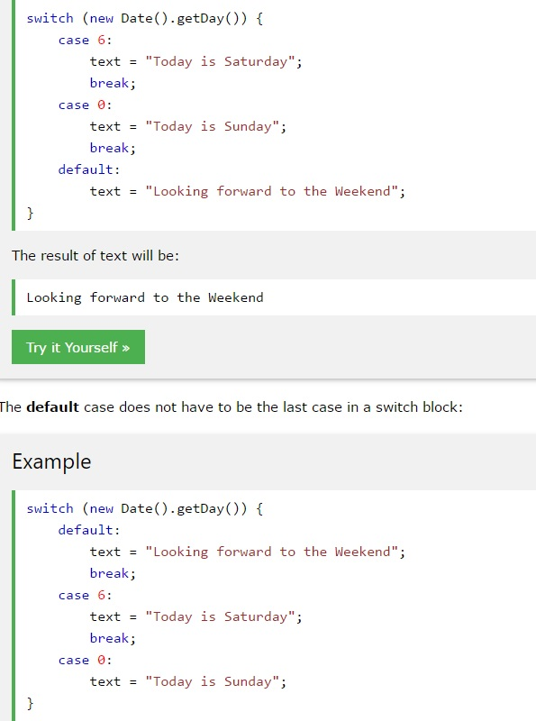

Switch statements are used to perform different actions based on different conditions.
When JS reaches a break keyword, it breaks out of the switch block.
Unnecesary to break last case in switch block.
 The default keyword specifies the code to run if there is no case match:
It doesn't have to be the last case in a switch block.
Different switch cases using the same code.